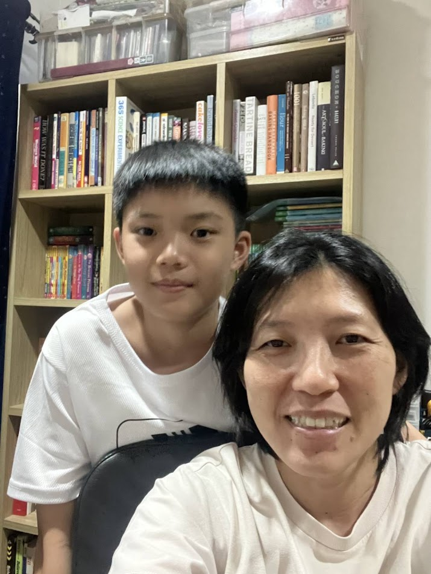
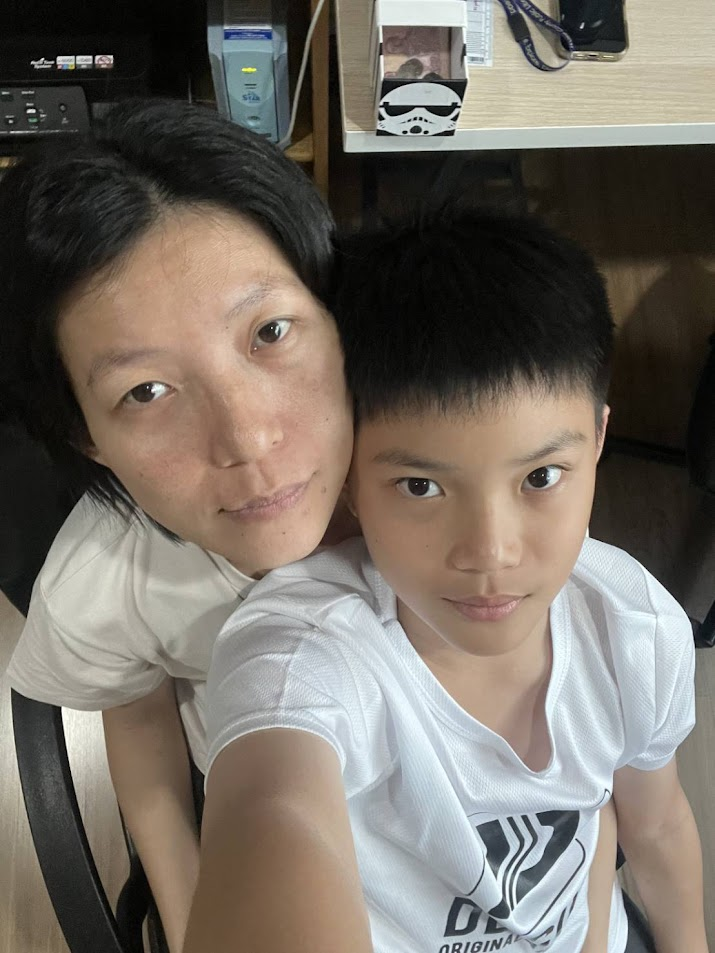

วันแม่แห่งชาติ💖✨
สิ่งที่อยากบอกแม่
ขอบคุณแม่ที่ ทุกๆวันที่ทำข้าวให้ผม ให้ค่าข้าวให้ผมกินทุกวัน และขอบคุณคุณแม่ที่ให้ความรักผมช่วยการบ้านผมตลอด และทุกๆอย่างที่แม่เคยทำ แม้ผมจะซนแค่ไหน แม้ผมจะโกรธแม่แค่ไหน แม่ก็รักผมตลอด ผมรักและขอบคุณแม่นะคร้าบบ

บทกลอนมอบให้แม่
ในดวงจิตคิดคำนึงถึงมารดาผู้ที่มอบดวงชีวาแก่ลูกนี้
ท่านสอนสั่งเลี้ยงให้ลูกเป็นคนดี
ท่านผู้นี้คือท่านแม่ของเราเอง